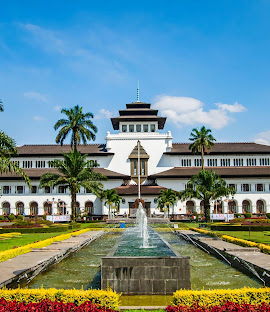

SEJARAH
.jpg)
Sejarah Kota Bandung mencakup periode sebelum dan setelah menjadi pusat pemerintahan. Awalnya, nama Bandung diperkirakan berasal dari kata "bendung" atau "banding" yang merujuk pada bendungan atau danau. Pada masa lalu, aliran lava dari Gunung Tangkuban Perahu membentuk danau purba di cekungan Bandung.
Secara resmi, Kota Bandung didirikan pada masa pemerintahan kolonial Belanda, di bawah kepemimpinan Bupati Bandung ke-9, R.A. Wiranatakusumah (1794-1829). Kabupaten Bandung sendiri, sebelum menjadi kota, merupakan bagian dari Kerajaan Mataram dan mengikuti sistem pemerintahan kerajaan tersebut.
Bandung kemudian berkembang menjadi pusat pemerintahan dan dikenal sebagai "Kota Kembang" karena keindahan alamnya dan banyaknya bunga yang tumbuh di sana. Selain itu, Bandung juga dijuluki "Paris van Java" karena keindahannya yang menyerupai Kota Paris.
Konferensi Asia-Afrika yang diadakan di Bandung pada tahun 1955 memberikan dampak besar bagi kota ini, menjadikannya dikenal di seluruh dunia.
GEOGRAFIS
.jpg )
Bandung secara geografis terletak di dataran tinggi, tepatnya di kawasan Lembah Bandung, yang dikelilingi oleh pegunungan. Kota ini berada pada ketinggian sekitar 768 meter di atas permukaan laut, dengan titik tertinggi di sebelah utara (1050 mdpl) dan terendah di sebelah selatan (675 mdpl). Bandung juga dilewati oleh dua sungai utama, yaitu Cikapundung dan Citarum.
WISATA
.jpg)
Bandung menawarkan berbagai pilihan wisata, mulai dari wisata alam, sejarah, budaya, hingga kuliner. Beberapa tempat wisata populer di Bandung antara lain Kawah Putih, Taman Hutan Raya Ir. Djuanda, Lembang Park & Zoo, dan Orchid Forest Cikole. Selain itu, ada juga ikon kota seperti Gedung Sate, Monumen Bandung Lautan Api, dan Jembatan Pasupati. Bagi penggemar wisata sejarah, Gedung Merdeka dan Jalan Braga adalah pilihan yang tepat.
GEDUNG SATE

Gedung Sate merupakan gedung kantor Gubernur Jawa Barat. Gedung ini memiliki ciri khas berupa ornamen tusuk sate pada menara sentralnya, yang telah lama menjadi penanda atau markah tanah Kota Bandung yang tidak saja dikenal masyarakat di Jawa Barat, tetapi juga seluruh Indonesia bahkan model bangunan itu dijadikan pertanda bagi beberapa bangunan dan tanda-tanda kota di Jawa Barat. Misalnya bentuk gedung bagian depan Stasiun Kereta Api Tasikmalaya. Gedung berwarna putih ini mulai dibangun pada tahun 1920 dan masih berdiri kokoh hingga saat ini.
BOSCHA
Observatorium Bosscha adalah observatorium astronomi tertua di Indonesia yang terletak di Lembang, Kabupaten Bandung Barat, Jawa Barat. Observatorium Bosscha mengoperasikan sekitar 12 teleskop termasuk tiga buah teleskop radio dengan Teleskop Refraktor Ganda Zeiss 0.6 meter sebagai teleskop terbesar yang dipasang di kubah.[1][2] Kode observatorium Persatuan Astronomi Internasional (IAU) untuk Observatorium Bosscha adalah 299.[